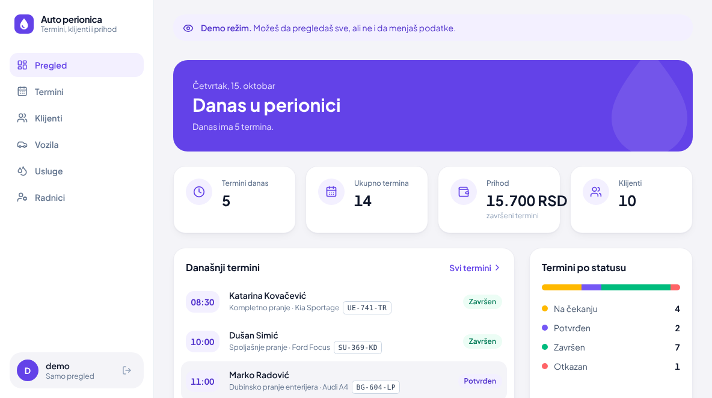

01 // Auto Perionica
Lični projekat
Sistem za upravljanje auto perionicom: klijenti, vozila, termini, radnici i usluge, sa PostgreSQL bazom u oblaku.
Najteže: povezati sve sa bazom. Prijava i registracija rade preko JWT tokena, a prihod se računa samo od završenih termina.
React
Node.js
Express
PostgreSQL
JWT
Tailwind